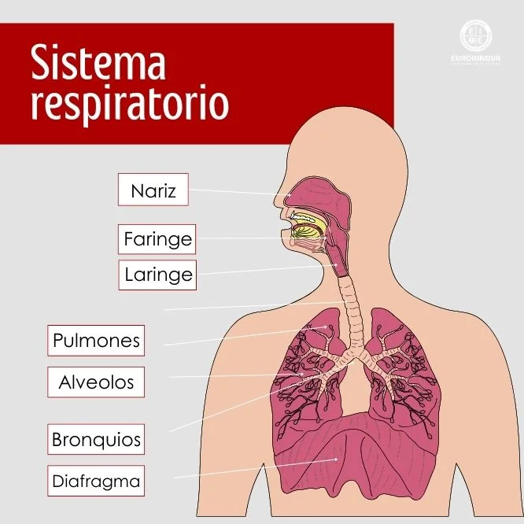
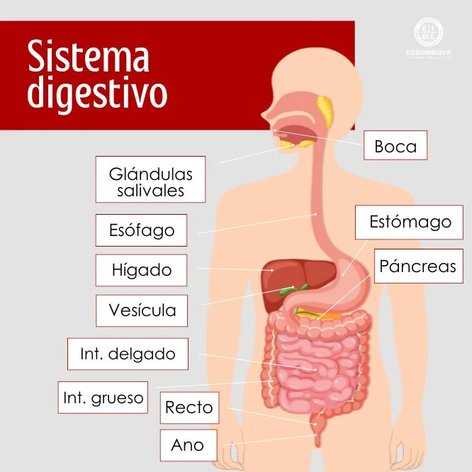
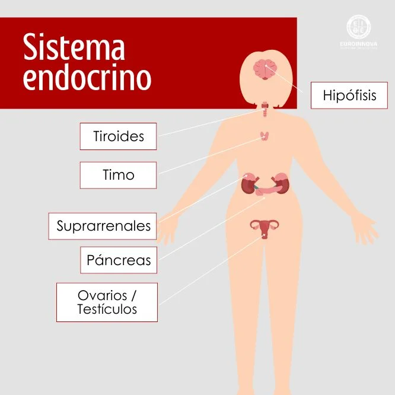
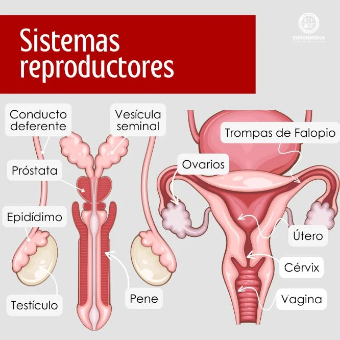
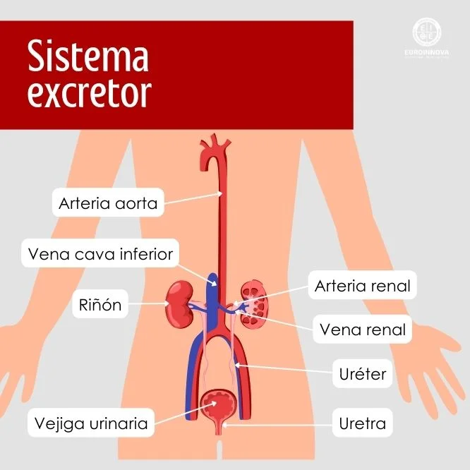
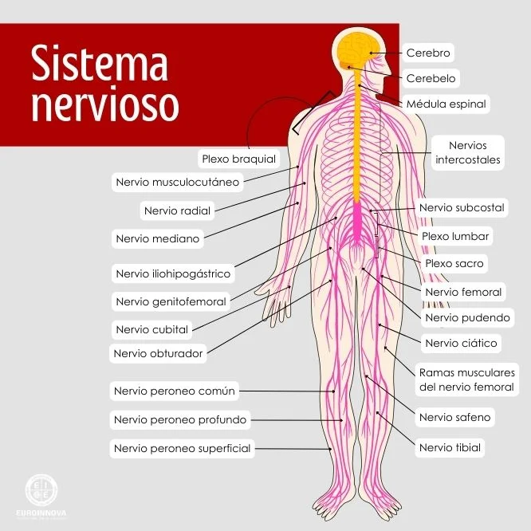
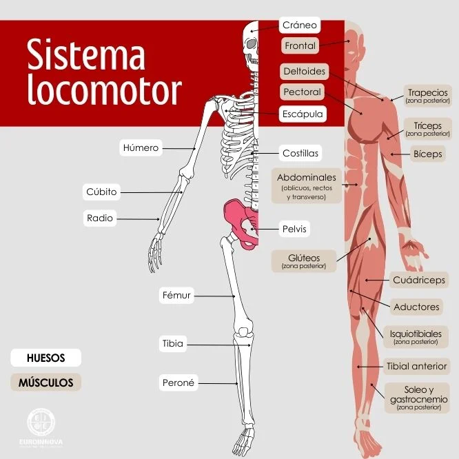

Definimos el cuerpo humano como una estructura física y orgánica conformada por tres partes, las cuales son: la cabeza, el tronco y las extremidades superiores e inferiores. Además, el mismo cuenta con una estructura orgánica que es conformada por diferentes sistemas, entre los que encontramos los siguientes: el respiratorio, circulatorio, sistema digestivo, entre otros. ¿Nos acompañas a conocer más sobre la estructura biológica y funcional del ser humano? El cuerpo humano se encuentra cubierto por la piel, la cual brinda protección a los músculos y órganos; sumado a ello, este cuenta con diferentes elementos químicos vitales para su funcionamiento, como es el caso del oxígeno, el nitrógeno, hidrógeno, calcio, fósforo, entre otros. Existen diferentes ciencias que se encargan del estudiar cómo funciona el cuerpo humano y cómo se compone. Entre ellas podemos destacar la fisiología humana, que se encarga de estudiar las funciones tanto de los órganos como de los sistemas corporales; la anatomía humana, la cual es una ciencia práctica que se encarga de estudiar la clasificación, ubicación y estructura del cuerpo y de aquellos elementos microscópicos del mismo; o la antropometría, encargada del estudio de las medidas y proporciones del cuerpo, donde los elementos centrales son, el peso, la atura, grosor de la piel y las circunferencias corporales.
Se encarga de interconectar todos los sistemas a través del bombeo de la sangre con la finalidad de mantener vivos y en operación a los órganos; dicho esto, es el que permite que se pueda transportar el oxígeno, los nutrientes y las hormonas a todas las zonas del cuerpo.

El sistema respiratorio es el que permite el intercambio de gases con el medioambiente, es decir, permite el ingreso de oxígeno al organismo y que se pueda desechar el dióxido de carbono, que es un desecho que resulta nocivo para el cuerpo humano. Esta acción se realiza a través de la respiración y la sangre es la encargada de transportarlo.
Es un conjunto de órganos a través de los cuales se lleva a cabo el proceso de la digestión; en este punto se realiza la transformación de los alimentos, permitiendo la absorción de los nutrientes necesarios que permiten el funcionamiento adecuado de los seres humanos.
El sistema endocrino e encuentra formado por 8 glándulas que se encargan de secretar sustancias en la sangre, es decir, las hormonas que permiten la regulación del crecimiento y desarrollo, así como del metabolismo y la reproducción.
Permite que se pueda seguir perpetuando la especie y es claro señalar que es diferente tanto en hombres como mujeres, ya que el del hombre está compuesto por dos elementos: testículo y pene, mientras que el de las mujeres se encuentra conformado por: útero, ovarios y vagina:
La principal función del sistema excretor es hacer que el cuerpo expulse la orina y sudor, que son los principales líquidos con sustancias diluidas que nuestro cuerpo no puede aprovechar. En caso de que el sistema excretor no funcionase correctamente y el cuerpo no expulsase la orina, podríamos sufrir graves infecciones, intoxicaciones e incluso fallos orgánicos.
El sistema nervioso se encuentra formado por una red compleja de células y nervios por medio de los cuales se trasmite información desde el cerebro y médula espinal a diferentes partes del cuerpo; estos son los que permiten que las personas puedan sentir su cuerpo y se envíe la información de que hay que moverse a los músculos, entre otras cosas. Además, el sistema nervioso tiene dos partes principales: el sistema nervioso central y el sistema nervioso periférico. El sistema nervioso central está formado por el cerebro y la médula espinal. El sistema nervioso periférico, por todos los nervios que se ramifican desde la médula espinal para llegar a todas las partes del cuerpo humano.
También llamado sistema músculo-esquelético, se encuentra constituido por el esqueleto o huesos, músculos, ligamentos, tendones y articulaciones, que se encargan de conectar las partes del cuerpo y de esta manera, permitir la movilidad y desplazamiento del mismo (Euroinnova Blog, 2025).
La biología del cuerpo humano incluye:
La anatomía general estudia los órganos tal como aparecen a simple vista o en una disección del cuerpo.
La anatomía celular es el estudio de las células y sus componentes, los cuales pueden observarse solo con la ayuda de técnicas e instrumentos especiales como los microscopios.
La anatomía molecular (a menudo llamada biología molecular) estudia los componentes más pequeños de las células al nivel bioquímico.
La anatomía y la fisiología varían notablemente desde la fecundación hasta el nacimiento. Después del nacimiento, el ritmo de los cambios anatómicos y fisiológicos se hace más lento, pero la infancia sigue siendo una etapa de crecimiento y desarrollo notables. Algunos cambios anatómicos se producen una vez alcanzada la edad adulta, pero son los cambios fisiológicos en las células y en los órganos los que más contribuyen al envejecimiento como tal (Merck Manuals, 2025).